Module 2
Retraining Your Brain Where to Sleep
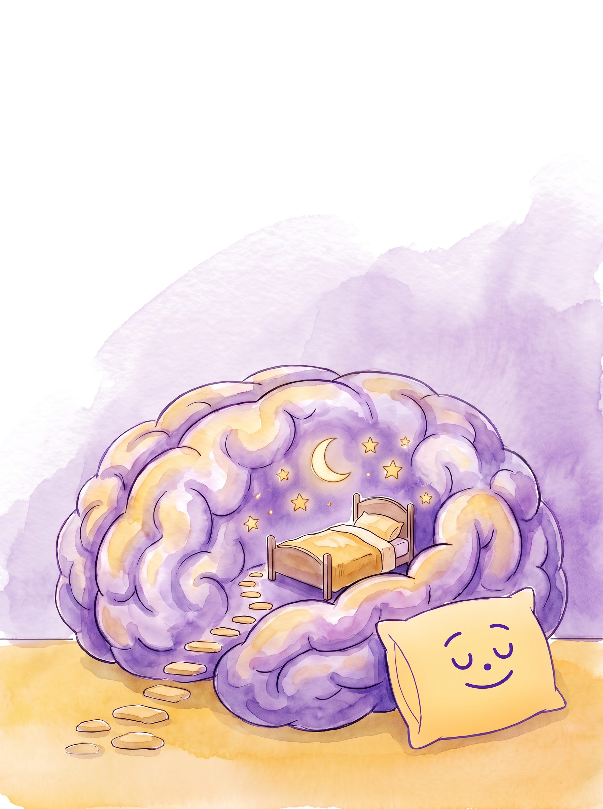

Your last module laid the foundations for good, restful sleep. We learnt that sleep is an active process that occurs in roughly 90-minute cycles and involves different stages (NREM and REM), each supporting functions such as memory, learning, physical repair, and overall health. We also learnt that brief awakenings during the night are normal and usually not something to be worried about.
The last module also discussed common changes in sleep that occur with age and dementia. People living with dementia and care partners may experience more disrupted sleep due to brain changes, caregiving demands, health issues, stress, or environmental factors.
However, it’s important to recognise that sleep problems can take different forms. Sleep deprivation occurs when external factors interrupt sleep, while insomnia occurs when there is an opportunity to sleep but difficulty falling or staying asleep.
Good sleep relies on three key ingredients: a strong sleep drive, a well-aligned body clock, and a calm mind and body before bed.
We also introduced our first group of strategies focused on building sleep drive to help sleep come more easily. These strategies include keeping a consistent wake time, limiting naps, and avoiding going to bed too early.
What strategies worked well for you last week?
What challenges came up for you last week (big or small!)?
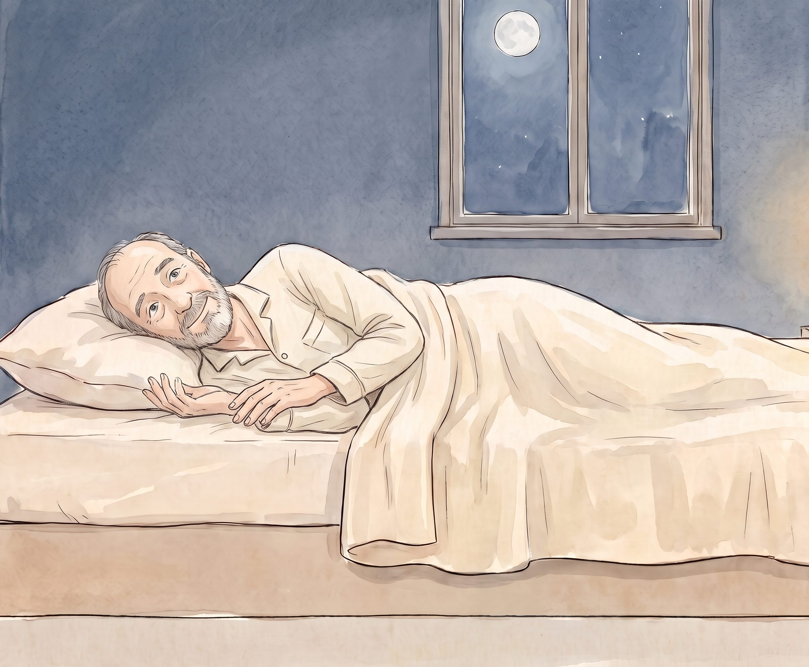
Our brains learn through associations. Over time, they link certain places, behaviours, and feelings together. For example, you might feel hungry when you smell food cooking, or feel relaxed when you sit in your favourite chair.
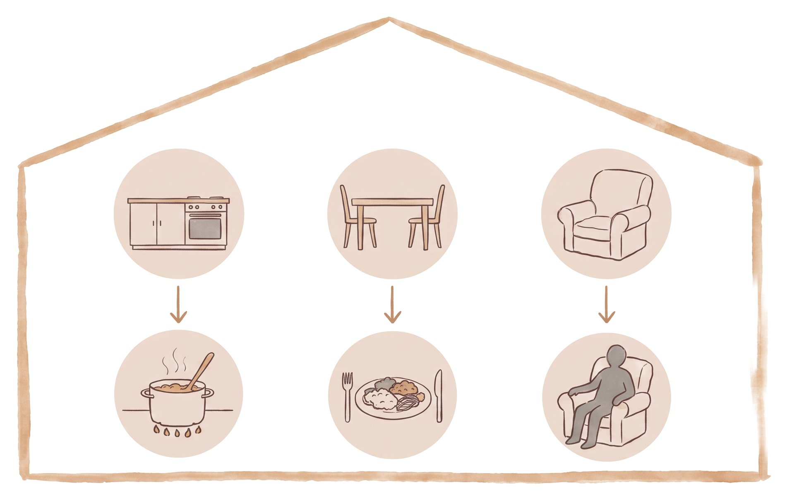
But how does this relate to sleep? Well, ideally the bed and bedroom should be associated with sleep and relaxation. When this connection is strong, getting into bed naturally signals to your brain that it is time to sleep and you can fall asleep, and stay asleep, more easily.
However, when sleep problems persist, the brain can accidentally learn different associations. If someone spends long periods awake in bed worrying, thinking, or feeling frustrated about sleep, the brain may begin to link the bed with wakefulness rather than sleep.
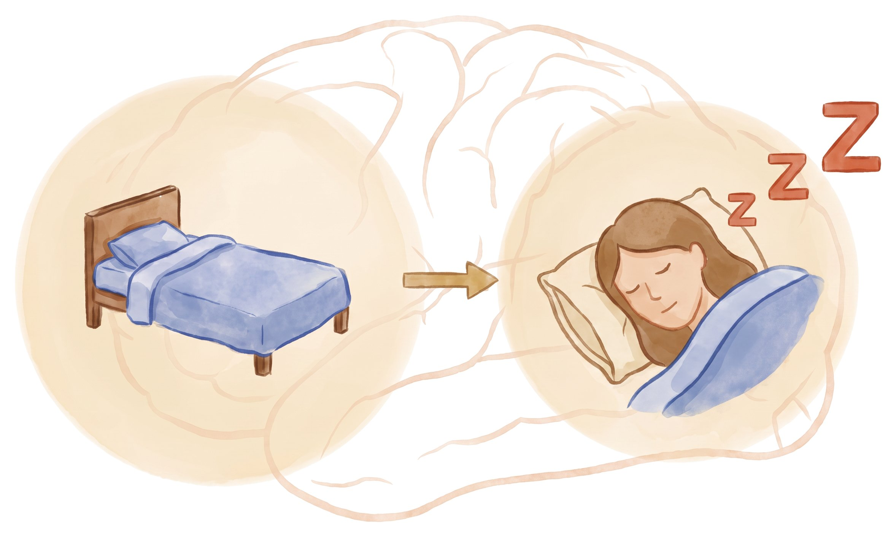
This type of learning is known as classical conditioning. It simply means that the brain learns by pairing things together over time. When sleep is going well, the association is clear:
Bed + sleep = strong sleep connection
But when sleep difficulties arise, a different pattern can develop:
Bed + being awake, worrying, or tossing and turning = weaker sleep connection
Over time, the brain can begin to treat the bed as a place for being awake rather than sleeping.
Your brain can learn that the bed means sleep, or it can learn that the bed means being awake.
Certain sleep-related habits can unintentionally work to weaken the connection between the bed and sleep.
These include:
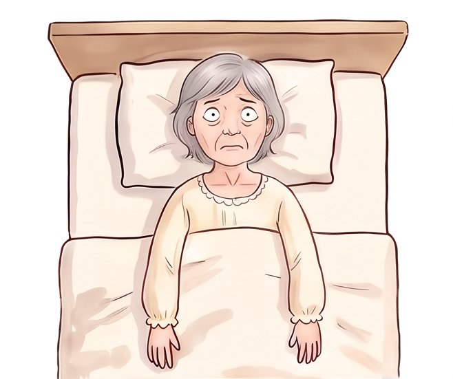
Lying awake in bed for long periods
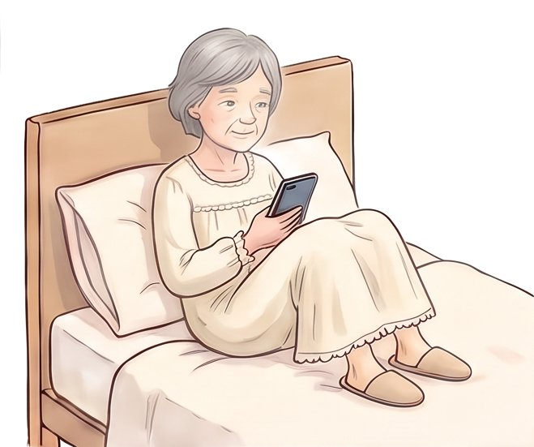
Watching TV or using phones in bed
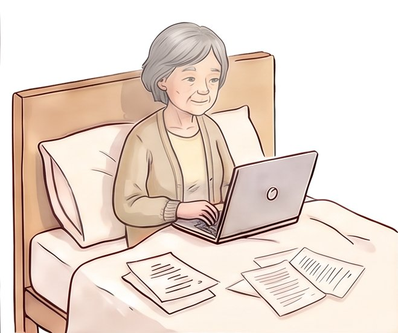
Doing paperwork or worrying in bed
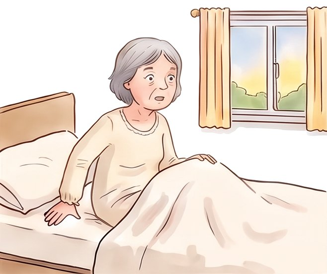
Going to bed long before feeling sleepy
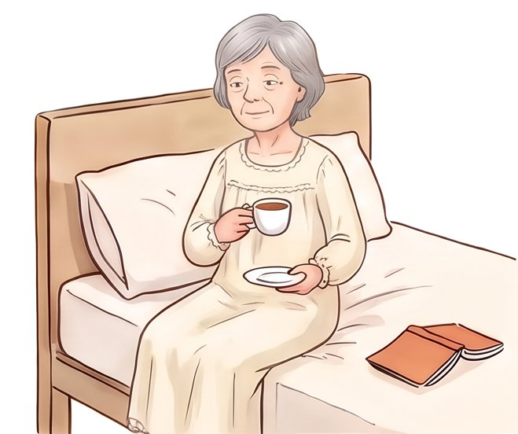
Spending lots of time awake in the bedroom
When these patterns happen regularly, the brain may begin to learn: “This is the place where I lie awake.”
It is also common to start trying harder to make sleep happen. However, sleep is one of the few things that can become more difficult when we put pressure on ourselves to achieve it. The more we think, “I need to fall asleep now” or “I won’t cope tomorrow if I don’t sleep,” the more our brain can become alert and switched on.
Which of these might be happening in your night-time routine?
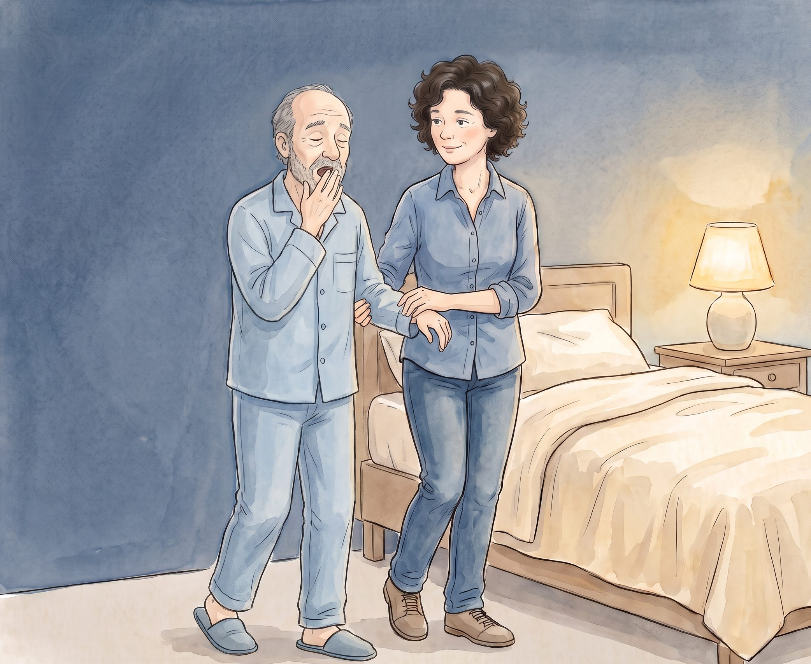
As you have just learnt, our brains can learn to associate the bed with being awake, when really we want it to associate the bed with sleep!
BED = AWAKE, WORRY, FRUSTRATION
VS.
BED = SLEEP, RELAXATION
Strengthening the connection between bed and sleep can help improve sleep quality over time. It can be helpful to take some of the pressure off sleep. This does not mean giving up on sleep or accepting poor sleep forever. Instead, it means shifting the focus from “making sleep happen” to creating the right conditions for sleep to return. This will reduce alertness and rebuild the connection between the bed, bedroom, and rest.
Here are some ways to help your brain recognise it’s time for sleep:
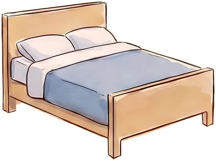
When we do anything else in bed, our brains associate the bed with being awake rather than sleeping, which can make it really hard to sleep when you’re in bed at night.
For some people living with dementia, the bed may also be used for comfort, rest, or safety during the day. The goal is not to remove all daytime rest, but to create as clear a connection as possible between the bed and sleep when this is practical.
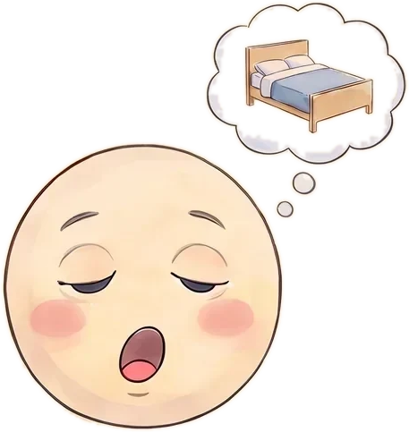
If you get into bed when you’re not sleepy, there’s a good chance you’ll be lying there awake and thinking, which builds that brain association between the bed and being awake. Only go to bed when you’re actually in the mood for sleep!
Instead, try to notice your own signs of sleepiness and aim to go to bed when you feel ready for sleep.
For people living with dementia, signs of sleepiness may look different from person to person. Some people may become quieter, less engaged, yawn, rub their eyes, or show reduced energy. Learning to recognise these cues can help identify the right time for sleep.
What are your signs that you are sleepy?
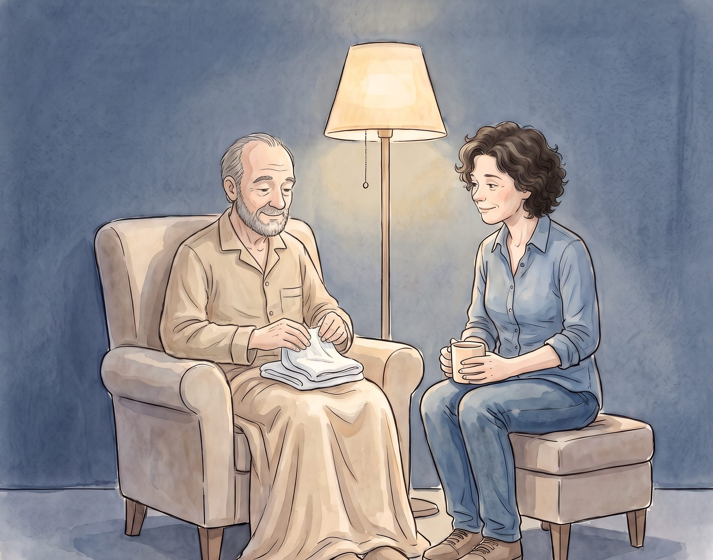
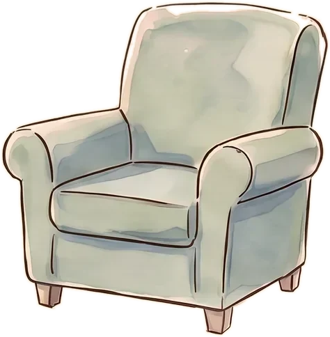
If you are finding it hard to fall asleep, or you wake during the night and cannot return to sleep, it can help to get up and do something calming in another room (or another area of the home) before returning to bed when you feel sleepy again.
If you feel like you’ve been awake for a while (e.g., around 15–20 minutes), getting out of bed can help prevent the bed from becoming associated with frustration, worry, or being awake. It will also reduce the likelihood that you will use the bed to think, plan, or engage in other activities (e.g., scrolling through your phone, watching TV).
When you leave the bed you could do something relaxing or even a little boring. This might be reading, folding the laundry, or colouring in. It is important to do these activities in dim light, as brighter light can signal to your brain that it is time to be awake, making it harder to feel sleepy again and return to bed.
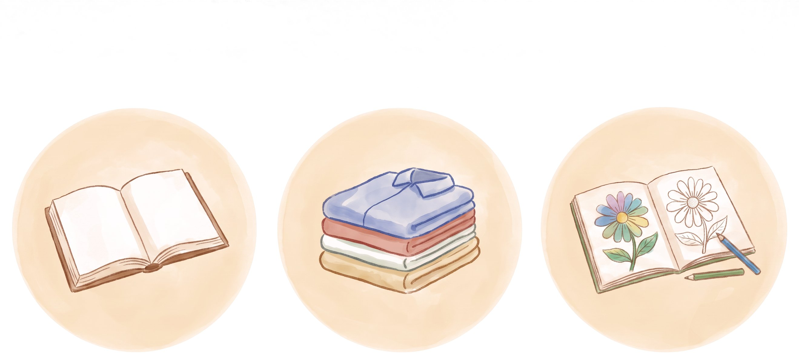
For people living with dementia, activities should be familiar, achievable, and matched to the person’s abilities. The goal is not to “keep them awake,” but to provide comfort, reduce distress, and support a return to sleep when they become sleepy again. Activities might include looking through familiar photos, listening to a favourite playlist, or handling meaningful objects.
When you feel sleepy again, return to bed and try to sleep. You may need to repeat this process more than once during the night, and that’s okay.
Factors such as mobility, falls risk, confusion during the night, and the availability of support may need to be considered. Safety and comfort always come first.
If leaving the bedroom is not feasible, for yourself or the person you care for, consider a quiet, low-stimulation activity while remaining calm and avoiding frustration (e.g., reading). Alternatively, consider moving to another space in the room (e.g., an armchair in the corner), in order to keep the bed for sleep.
List what activities you could do instead of lying in bed feeling worried or frustrated:
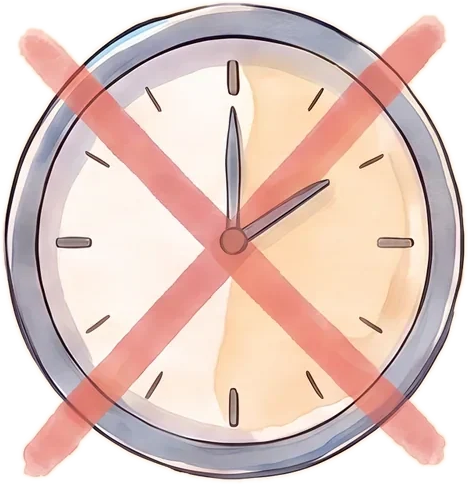
Clock watching at night can increase frustration and worry about not sleeping. Even the simple act of checking the time can make your brain more alert and make it harder to return to sleep.
If possible, remove clocks from the room, turn clocks away from view, or cover them so you’re not tempted to check the time.
For people living with dementia, checking the time repeatedly may add to confusion or distress, particularly during periods of waking at night when it can be harder to judge whether it is time to be awake or asleep. For some, however, having a visible clock may provide reassurance or orientation. In these situations, consider whether the clock is helpful or whether it contributes to worry or wakefulness.
Try to tune into signs of sleepiness from your body, rather than focusing on how long you’ve been awake or how long until you need to wake up. The aim is to reduce pressure around sleep and create a calmer environment where sleep can return naturally.
Small changes in bedtime habits can retrain your brain to see the bed as a cue for sleep.
There’s a misconception that waking up in the middle of the night isn’t normal. There is a lot of pressure or expectation that people should sleep all the way through at night. But actually, as we learnt in the last module, awakenings are a natural part of our sleep cycle. Everyone wakes up several times at night, we just might not remember them!
Waking up during the night is normal and part of the natural sleep cycle.
When you wake in the middle of the night you’ll also be building up your sleep hunger by being awake, which means that the next time you get to bed, you’ll fall asleep quicker and sleep deeper. Remember, being awake is not the problem, frustrated wakefulness is!
If you’re having trouble falling back to sleep even after leaving the bed, try focusing on resting rather than sleeping, which can take a bit of the pressure away.
If it’s hard to sleep, you can focus on resting rather than sleeping.
For many people living with dementia, the night-time and early morning hours can be a time for calm, quiet and relaxation. If the person you are caring for wakes up at night, you might want to help support them with relaxing activities until they begin to feel sleepy again. Think about ways you can set up a comfortable, low-stimulation environment during the night, including soft lighting, keeping noise to a minimum, and offering activities that are calming and familiar.
The middle of the night may also be a time of distress. In these moments, it can be more helpful to focus on being present rather than trying to reason or correct. It can be helpful to remember that their experience feels real and meaningful to them, even if it does not match what others can see or understand. For example, someone living with dementia may feel extreme fear about something which you might think is irrational. Instead of saying, “don’t be silly, that’s never going to happen”, you can aim to empathise with their feelings and provide reassurance, such as “I can see you’re feeling very upset and frightened, it must have felt really scary. I am here with you”.
Nightmares or frightening dreams can also contribute to night-time distress. The feelings created by the dream may continue after waking, even if the details are unclear or do not seem realistic to others. Responding to the emotion, such as fear or confusion, rather than focusing on whether the dream was real can help the person feel safe and supported.
Responding with empathy does not mean agreeing with the concern or reinforcing a misunderstanding. It means recognising the person’s feelings and helping them feel understood. It can also help to consider what the person may be trying to communicate through their waking or distress. They may be feeling uncomfortable, lonely, confused, needing reassurance, or responding to something in their environment.
If the person you care for wakes at night, calm reassurance and a quiet environment can help them settle again.
Responding with empathy rather than logic can help reduce distress in people living with dementia.
In this module we discussed the following key strategies:
Do you have any questions about the things you have learnt?
Do you have any questions for your coach?
Contact us:
research.team@care2sleep.example.au
Project Partners:


Scan to visit the project website